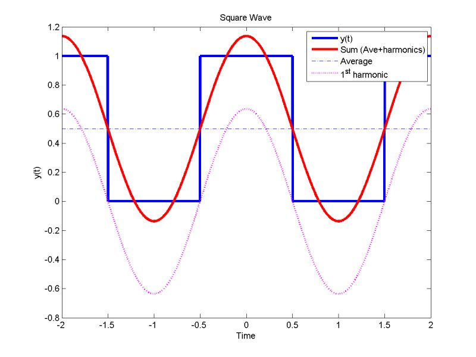

Fourier Series
in 1822, joseph fourier, while trying to understand how heat spreads through solid objects, proposed an idea that initially sounded implausible even to the mathematicians of his time: that any repeating pattern, no matter how jagged or irregular, could be written as a sum of smooth, perfectly regular waves layered carefully on top of one another.
today i want to explain this idea for a general reader. it is a subject of great interest to me, and explaining it well requires walking a narrow line between unnecessary technical detail and oversimplification.
consider listening to a song. the sound reaching your ear feels continuous, but it is made up of many different frequencies combined together. a low rumble, a mid-range melody, a high shimmer. your ear partially disentangles these automatically. fourier's insight was that this disentangling could be made mathematically exact: any repeating signal can be taken apart into its constituent frequencies, with each frequency carrying a precise weight.
formally, a periodic function $f(t)$ with period $2\pi$ can be written as:
$$f(t) = \frac{a_0}{2} + \sum_{n=1}^{\infty} \left( a_n \cos(nt) + b_n \sin(nt) \right)$$each term in this sum is a pure wave oscillating at a whole-number multiple of the base frequency. the integer $n$ is called the harmonic. $n = 1$ is the fundamental frequency, $n = 2$ oscillates twice as fast, $n = 3$ three times as fast, and so on. the coefficients $a_n$ and $b_n$ tell you how much of each harmonic is present. they are computed by:
$$a_n = \frac{1}{\pi} \int_{-\pi}^{\pi} f(t) \cos(nt)\, dt, \qquad b_n = \frac{1}{\pi} \int_{-\pi}^{\pi} f(t) \sin(nt)\, dt$$what these integrals are doing is measuring the overlap between $f$ and each pure wave. if $f$ has a lot of a particular frequency in it, the integral is large. if $f$ has none of it, the integral is zero and that harmonic simply drops out of the sum. the constant term $\frac{a_0}{2}$ is just the average value of $f$ over one period.
the remarkable thing is that this works even for functions with sharp corners and discontinuities. a square wave, which jumps abruptly between two values, has no smooth features whatsoever. and yet it can be approximated by adding sine waves:
$$f(t) = \frac{4}{\pi} \left( \sin(t) + \frac{\sin(3t)}{3} + \frac{\sin(5t)}{5} + \cdots \right)$$only odd harmonics appear, each one smaller than the last. as you add more terms the jagged square shape gradually emerges from the accumulation of smooth curves.

the image above shows exactly this process. the blue square wave is the target. the dotted pink curve is just the first harmonic, a single sine wave. the red curve is the sum of several harmonics. it is already close, but not quite there. add enough terms and the red curve converges to the blue one everywhere except at the jump itself, where it always overshoots slightly. this overshoot does not disappear as you add more terms. it just gets narrower. this is called the gibbs phenomenon, and it is one of the more striking things fourier analysis teaches you: some features of a function are genuinely hard for waves to capture, not because the method is approximate but because the geometry of the jump and the geometry of sinusoids are fundamentally incompatible at a single point.
fourier's idea did not remain confined to heat equations for long. the fourier transform extends the series to functions that do not repeat at all, replacing the discrete sum over harmonics with a continuous integral over all frequencies. this is the tool behind audio compression, image processing, medical imaging, and radio transmission. when your phone compresses a photograph, it is essentially computing which frequencies are present in the image, discarding the ones too subtle to notice, and reconstructing from what remains.
mathematicians of fourier's time were skeptical, not because the idea was vague but because it was too strong. the claim that an arbitrary function, even a discontinuous one, could be represented by an infinite sum of smooth waves contradicted their intuitions about what functions were and how series could behave. it took the better part of a century to make the convergence theory rigorous. fourier was right, but for reasons that required entirely new mathematics to understand.